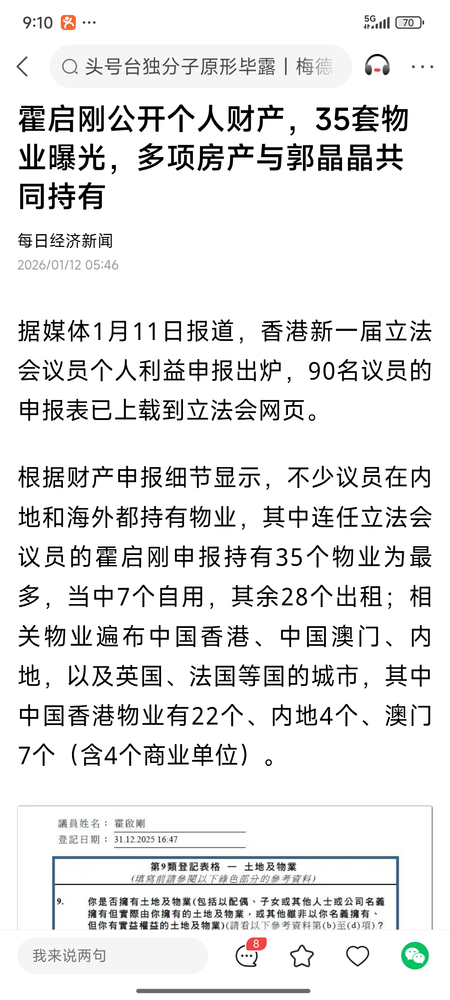

概述
- 本篇记录一些历史案件，分析社会发展
2026年1月21日
-
奶奶走了. 据我小姑姑和大舅说是前一天晚上还能吃饭，1.21早上还能吃饭，中午就没了。鞋子脱掉了，人是斜着躺在床上. 断气后过了一会儿，我小姑姑从杭州医院看病回来，才看到她已经走了.
-
奶奶的葬礼，全是按基督教这一套走的. 家里没什么亲戚朋友, 全是靠教会里的兄弟姐妹来撑场面.包括演奏歌曲、朗读诗歌、做祷告. 真心感恩上帝.
- 我奶奶到死都没有让人伺候一天，死的时候也快. 没有在床上躺几个月.应证那一句活的时候要活强健、死要死得快.是我辈楷模. 连佛教徒也说，猝死是人到晚年最大的福份. 说明死的快确实是人生最后的福报
-
死之前把一些东西都自己准备好，包括钉子和硬币，还有一些黄纸等。钉子和硬币，是在放骨灰的坟里，放骨灰之前先放一些钉子和硬币，然后让子孙先去踩一踩，然后再拿起来，再放骨灰盒。这些钉子和硬币预示着子孙后代发丁、发财.
-
死后照片: png
- 视频1
- 视频2
-
死之前几天要靠轮椅推进推出了 要靠大舅小姑他们来送饭了, 你摄像头没看到? 1月20号小姑说第二天来不了了, 个么你们几个姐妹没有一点商量的么?
{kind=link}
浦江小舅公、表伯伯交代
- 1 爷爷奶奶坟边上，左青龙右白虎，青龙太低了，要去种几棵树
- 2 坟前的平台现在有坍塌的风险，要及时用水泥去浇灌好。
- 3 家里现在客厅那间房子楼上不能做房间. 小舅公交代, 以前的人很苦，但是过去了也就过去了，人死了之后这些风水的东西是给子孙后代考虑的。同样的房子，你住可能家破人亡，我住可能顺风顺水，主要看八字合不合。所以不可不信。小舅公交代，人心地要善良，但是这个风水也不可不信. 至少浦江是一代一比一代好.
其他事情
- 1 以前我太外公尊名为岳山. 以前我太外公的父亲，也就是我奶奶的爷爷是浦江著名的风水先生.
- 2 根伯伯交代, 以后立墓碑除了写字，也要弄照片. 照片也是永久性的. 这样以后人们就知道这是谁谁谁的坟.
- 3 土产大伯照顾二嬷嬷的事情
2026年1月
-

-
银行定期存款利率从之前2%，跌入1%，甚至跌破1%
-

-
说明国家在逐步剥夺百姓的财富.
- 正在上升的模式，拿公司来做比喻，是腾讯公司那种模式，腾讯是真正的藏富于民，把利益分给员工。腾讯也能一直一直出各种游戏爆款.
灵隐寺景区门票
- 1988年1元
- 1984年2角
- 1979年1角
2025年12月
- 浙江宁波5个月女婴“心脏病”手术不治，引发误诊争议和社会大讨论
2025年11月
-
2025年10月25日中华人民共和国设立台湾光复纪念日，认为“台湾光复为中国人民对日抗战的重要胜利成果，是中国政府恢复对台主权的主要证据，也是台湾是中国一部分的历史事实和法理依据”.
-
台湾统一之后，哪些商业公司会得到好的发展?
- 个人认为，是旅游业一定会繁荣发展. 早点去台湾旅游，以及看看合适的地方买房、投资, 包括报考台湾公务员等.
2025年
- 武汉大学图书馆事件
-
- 2023年，武大一名女研究生指控大一男同学在图书馆自习时对其进行性骚扰，遂在网路上曝光证据。
-
- 2025年， 事情发酵，武大撤销对男同学记过处分
- 杭州自来水是粪水事件
2018年
张扣扣案
最后法官爆出来贪腐
2017年
2017年岁末，发生在北京的红黄蓝幼儿园虐童事件
有家长在社交媒体曝光此事，称其子女在幼儿园遭到扎针、喂药片、猥亵等，当即引发舆论热议。比同年11月8日发生在上海的携程亲子园虐童事件更加复杂，由此而起的谣言一度将矛头指向军方
https://www.jingjidaokan.com/icms/null/null/ns:LHQ6LGY6LGM6MmM5Y2QyOGQ2MGMwOGM1MjAxNjE3OTIzYjgwZTA2OWMscDosYTosbTo=/show.vsml
2009年
2009年，震惊全国的邓玉娇案，相信大家都有所耳闻。湖北女孩邓玉娇因工作期间被官员侮辱企图强奸，危急关头，邓玉娇怒而反击，杀一人，伤一人。
最终法院从防卫过当，改判为正当防卫
https://www.163.com/dy/article/J0KHPL4R0553E0B3.html